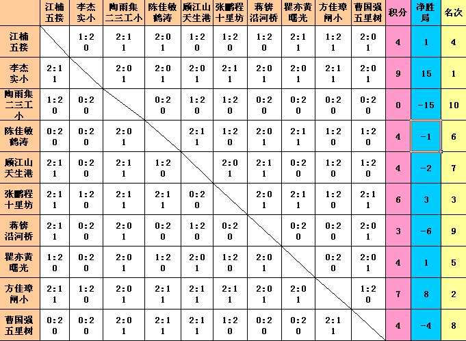
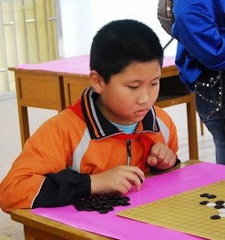
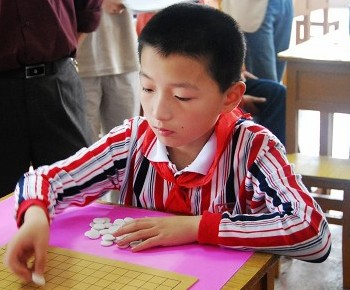
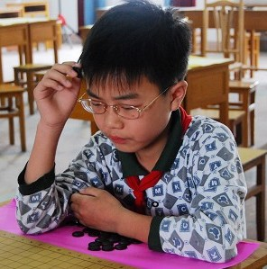

港闸区首届中小学生五子棋比赛小学组个人赛今日结束
#1 港闸区首届中小学生五子棋比赛小学组个人赛今日结束 作者：黄药师 发表时间：2007-6-5 21:20:44

6月5日，港闸区10个校（辅导区）选派的最优秀的选手参加了小学组个人赛。
比赛采取大循环，每位选手都要经过9轮20多局的厮杀，才能分出胜负。
赛前，夺冠热门当属唐闸小学的方佳璋同学，鹤涛小学的陈佳敏同学（一个三年级的女生），曙光小学的瞿亦黄同学也具有一定实力。
但是比赛第一轮就风云突变，唐闸小学的方佳璋对阵实验小学的李杰，猜子，李杰黑，起手云月，速度很快，每一步都很自信，看来是有备而来，很快第一局取胜。第二局，方佳璋开谱月，20几手的必胜定式也轻松拿下。第三局猜子也是李杰黑，依然是黑，依然是云月，这次方佳璋防守很到位，李杰大概谱也就熟悉前20手，双方进入中盘搏杀，到处充斥着杀和反杀。你来我往，此时，方佳璋有一个VCT，一斜活三，然后横着双活三，就能取胜。胜利就在眼前，方佳璋同学却犯了两个致命的错误，第一个错误：他没有走斜活三，而是先走横向活三，然后准备再活三，结果横向活三被对方反了；第二个错误：对方反了三，方佳璋同学没有看见，继续走双三，结果自然是失败。
方佳璋同学也许做梦都想不到，这一个错误就把冠军丢了。到了后面的比赛，实验小学的李杰同学一路云月杀到底，全胜，获得冠军。而方佳璋同学明显受到这局的影响，在后面的比赛中显得心事重重，几场比赛都是2：1险胜。在和五里树小学比赛过程中做一个简单的VCF发生了错误，输掉了比赛。
此时，整个局面也开始发生了变化。实验小学的李杰始终是一枝独秀，十里坊小学的张鹏程，鹤涛小学的陈佳敏开始爆发，连赢几场。而原本实力强劲的曙光小学的瞿亦黄却陷入苦战，连续两场必胜的（花月开局）都在中盘意外失手，心情明显受到影响。
几轮过去，除二三工小全负，实验小学全胜，其他几个队伍陷入的胶着状态。在中午进行休息的过程中，各队的教练纷纷与学生拆局，复盘。中午短暂休息之后，上午郁闷的方佳璋同学开始发威，赢下了下面所有比赛，而之前积分靠前的鹤涛小学，天生港小学，五接桥小学之间开始产生了混战，互相有了胜负。这让唐闸小学的方佳璋同学占了便宜，在还有一轮的情况下提前锁定了第二名。而五里树小学的曹国强绝对是个遇强则强遇弱则弱人物，鹤涛小学的陈佳敏，唐闸小学的方佳璋这么难对付的选手都在他手上，从而也打乱了积分的格局。
最后一轮十里坊小学的张鹏程终于杀出重围获得第三名。而五接桥小学，天生港小学，曙光小学，鹤涛小学，五里树小学，五里树小学都是4分，通过计算净胜局才排出名次。
这里要说一个小插曲：
第一轮，按照规定每一台放一个计时钟，每方10分钟。但是下面出现了一些奇妙的现象：有的是忘了按钟，有的是怕忘了按钟就把手放在上面，结果就出现双方都把手放在钟上，看上去就像比手劲。通过商量，看到第一轮学生下棋都比较流畅，就决定第二轮撤掉计时钟。然而，第二轮有几桌就限入了长考，不得已把计时钟又请回来了，改为裁判按钟。
综合评述：
1、通过比赛我们逐步摸索出学生五子棋的前进方向。实验小学的小选手的夺冠告诉我们，记住谱，尤其是关键点，是很重要的。如果你没有时间，或者学生记不住谱怎么办？实战，唐闸小学就是一个很好的例子，他们的选手是通过近百场比赛中产生出来的。
2、比赛是考试是一样的，心理素质很重要的，这一点唐闸小学的方佳璋同学和曙光小学的瞿亦黄同学似乎欠缺。尤其是方佳璋同学，在胜利之后喜形于色，失败的一瞬间，把棋子重重在桌上一敲，显得异常颓丧。下五子棋本身就是一需要静下心来的运动，如此浮躁怎么能下好棋。我们在教孩子们下棋的同时也要教他们如何保持一个良好的心态，这一点在他们以后的成长过程中是相当重要的。
3、这是我们区第一次学生比赛，很多地方肯定有不周全的地方（更大的原因是我们这样的比赛太少了）比如赛制，比如规则。我们这次比赛采取有禁手，不交换，不二打的方式，实验小学的李杰靠一招云月就打遍天下无敌手，让其他各校领会到必胜谱的厉害。这样一来，其他学校不可能无动于衷，在这之前不少学校可能认为五子棋算什么，太简单了，其实不然，五子棋容易入门，想要下精谈何容易啊。这样一来，五子棋就开始普及了，学生也多了一门兴趣，课间10分钟和同学杀一把，体育课上和老师杀一把，岂不快哉！明年的比赛我们还会修改规则，逐步规范起来，普及之后就要精致了。

个人赛第一

个人赛第二

个人赛第三
#2 Re:港闸区首届中小学生五子棋比赛小学组个人赛今日结束 作者：小丸.net 发表时间：2007-6-7 20:24:03
天那，我家小方，惨遭毒手啊。
#3 Re:港闸区首届中小学生五子棋比赛小学组个人赛今日结束 作者：黄药师 发表时间：2007-6-7 21:55:15
小方的心理素质还需要提高。